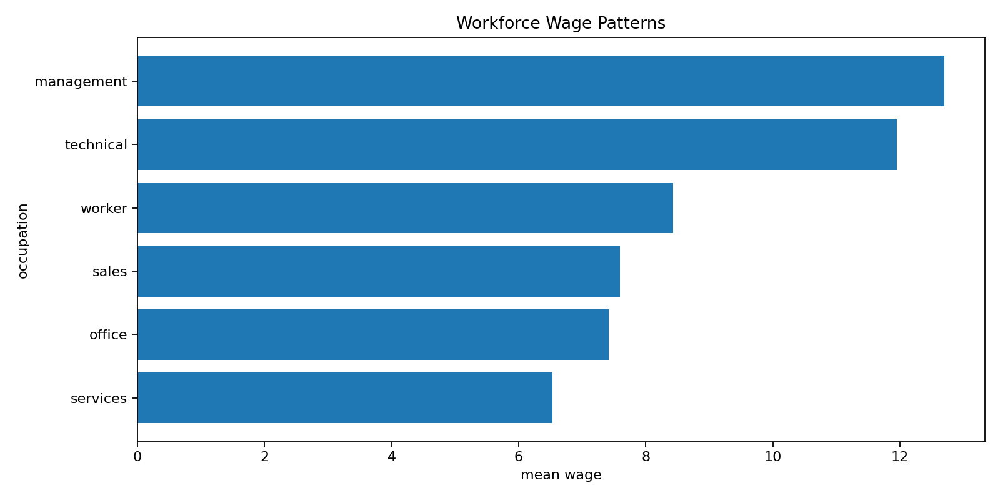

How do hourly wages differ across occupation categories?
The largest observed mean wage is 12.704 for management. This ranking is descriptive, not a recommendation.

| segment | rows_used | metric | minimum | maximum |
|---|---|---|---|---|
| management | 55 | 12.704000 | 1.00 | 44.50 |
| office | 97 | 7.422577 | 3.00 | 15.03 |
| sales | 38 | 7.592632 | 3.35 | 19.98 |
| services | 83 | 6.537470 | 1.75 | 25.00 |
| technical | 105 | 11.947429 | 4.35 | 24.98 |
| worker | 156 | 8.426474 | 2.85 | 26.00 |
Historical survey; reported means are unweighted unless survey weights are supplied.
Review sample design and adjust for experience and education.